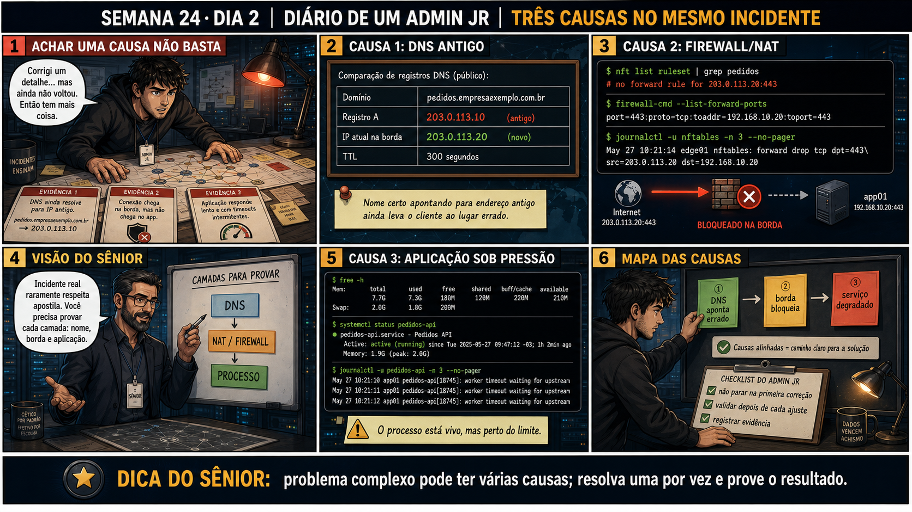

Semana 24 · Dia 2 — Missão Final Júnior | Fecha a Fase 2
Três Causas, Mesmo Incidente
encontrar um problema não é o mesmo que encontrar o problema — pode haver mais de um ao mesmo tempo
ANTES DE ALTERAR, OBSERVE. DEPOIS DE ALTERAR, VALIDE.
1. Continuando a investigação
Com DNS confirmado ontem, hoje o teste é conectividade direto no IP público: nc -zv
203.0.113.10 443 — de fora da empresa. O resultado é timeout. Isso empurra a investigação pra dentro do
NAT/port-forward
do firewall — e é aqui que a primeira causa aparece. Só que não é a única.
💡 Passa o mouse nas palavras destacadas pra ver uma dica rápida — clica se quiser a explicação completa com analogia.
2. Antes de ver as opções — tenta responder
🧠 Recall ativo: se você já encontrou UM problema real (NAT apontando pro IP antigo) mas ainda não
testou as outras camadas, por que não parar a investigação ali e já ir corrigir?
Porque encontrar UM problema real não prova que ele é o ÚNICO problema. Nesta migração de VLAN
específica, várias configurações dependiam do endereçamento antigo — o NAT é uma delas, mas o
trunk
de VLANs e as regras de VPN também podem depender da mesma coisa. Corrigir só o NAT e testar de novo é
a única forma de saber se esse era o único problema — e, se não for, você vai precisar continuar
investigando de qualquer jeito. Investigar tudo antes de corrigir é mais eficiente.
3. Questão comentada — clica numa alternativa
Você confirma três fatos, nesta ordem: (1) a regra de NAT no firewall aponta
pra 10.20.10.50, o IP antigo, não pro novo 10.20.30.50; (2) o trunk entre o switch e o firewall não inclui a
VLAN 30 na lista de VLANs permitidas; (3) a configuração AllowedIPs do peer VPN dos parceiros ainda lista só
10.20.10.0/24, não a nova subnet. O que esses três fatos, juntos, revelam sobre a causa deste incidente?
💡 Analogia do Sênior para Fixar: O princípio fundamental de 02 TRES CAUSAS MESMO INCIDENTE é como o alicerce de sustentação de um viaduto: garante que a estrutura de comunicação suporte alto tráfego sem colapsar.
4. Decodificador de conceitos
Clica em qualquer termo pra ver a definição completa e uma analogia do dia a dia:
5. Ferramentas e leitura da evidência
| Causa | Evidência | Semana de origem |
|---|---|---|
| 1. NAT desatualizado | Regra aponta pro IP antigo (10.20.10.50) | 17 |
| 2. VLAN não liberada no trunk | VLAN 30 ausente do allowed vlan | 20 |
| 3. AllowedIPs da VPN desatualizado | Só permite a subnet antiga | 18 |
--- teste 2: conectividade direto no IP público, de fora --- $ nc -zv -w3 203.0.113.10 443 nc: connect to 203.0.113.10 port 443 (tcp) failed: Connection timed out ❌ falha confirmada — investigar o caminho depois do IP público --- causa 1: NAT/port-forward no firewall --- $ show nat rules public 203.0.113.10:443 -> 10.20.10.50:443 ← IP ANTIGO, servidor não está mais aqui --- causa 2: trunk entre switch e firewall --- $ show interfaces trunk Port Vlans allowed Gi0/1 10,20 ← VLAN 30 (nova) não está na lista --- causa 3: configuração VPN (WireGuard) --- $ cat /etc/wireguard/wg0.conf | grep -A2 "\[Peer\]" [Peer] PublicKey = parceiros_pubkey AllowedIPs = 10.20.10.0/24 ← só a subnet antiga, falta 10.20.30.0/24 --- resumo do dia --- 3 causas confirmadas, independentes, todas decorrentes da migração de VLAN incompleta. Nenhuma correção aplicada ainda — isso é trabalho de amanhã, na ordem certa.
5.1 O painel 4 da prancha de hoje mostra um colega querendo corrigir o NAT imediatamente, assim que encontra essa primeira causa, sem terminar de checar o trunk e a VPN
Um colega quer agir assim que encontra o primeiro problema real, achando que investigar mais é perda de tempo.
Por que terminar de investigar TODAS as causas antes de corrigir qualquer uma é
mais eficiente do que corrigir e testar uma de cada vez?
💡 Analogia do Sênior para Fixar: Diagnosticar anomalias em 02 TRES CAUSAS MESMO INCIDENTE é como o eletricista usando o multímetro no quadro de disjuntores: mede a passagem de sinal no ponto exato da falha.
5.2 "Se as três causas vêm da mesma migração, não é só UM erro raiz, replicado três vezes?"
Um colega quer simplificar o relatório dizendo que houve só um erro (a migração malfeita), em vez de três.
Por que é tecnicamente mais preciso descrever isso como três causas
independentes, mesmo todas tendo a mesma origem (a migração de VLAN)?
💡 Analogia do Sênior para Fixar: Aplicar as boas práticas de 02 TRES CAUSAS MESMO INCIDENTE é como o protocolo de segurança da aviação: elimina pontos únicos de falha e garante previsibilidade operacional.
6. Procedimento profissional
- Depois de encontrar uma causa real, continue verificando as outras camadas relacionadas antes de corrigir.
- Documente cada causa encontrada individualmente, com a evidência específica de cada uma.
- Resista à tentação de corrigir assim que encontrar o primeiro problema — mapeie tudo primeiro.
- Reconheça que uma mesma mudança de infraestrutura (como uma migração) pode gerar múltiplas causas independentes.
- Prepare um plano de correção cobrindo TODAS as causas encontradas antes de começar a aplicar qualquer uma.
7. Laboratório guiado — marca conforme for testando
Segurança: execute os testes apenas em VMs descartáveis e confirme nomes de discos, hosts e arquivos antes de cada comando.
- Numa topologia de laboratório simulando o cenário (switch, firewall, duas VLANs), configure deliberadamente as três causas: NAT desatualizado, VLAN fora do trunk, AllowedIPs restrito.Resultado esperado: ambiente de teste reproduzindo o incidente completo.
- Investigue e confirme cada uma das três causas separadamente, com a evidência específica de cada uma.Resultado esperado: três causas documentadas individualmente, com comando e saída de cada confirmação.🧑🏫 Aqui entra o Mentor (em breve): se você encontrar só duas causas e achar que terminou, este é o ponto onde o chat com o Sênior-IA vai te lembrar de verificar todas as camadas relacionadas à migração.
- Monte um plano de correção listando as três ações necessárias, sem aplicar nenhuma ainda.Resultado esperado: plano de três passos, pronto pra execução no dia seguinte.
8. Validação e encerramento
- Três causas independentes confirmadas: NAT, trunk de VLAN, e AllowedIPs da VPN.
- Todas decorrem da mesma migração, mas são configurações tecnicamente distintas.
- Nenhuma correção foi aplicada ainda — só investigação e documentação completas.
- Encontrar uma causa não encerra a investigação — outras podem existir ao mesmo tempo.
Rollback e limites
Nenhuma mudança foi feita hoje, mantendo o mesmo princípio do Dia 1: investigar
completamente antes de agir. O risco de corrigir causas parcialmente, sem visão do quadro completo, é
reportar "resolvido" prematuramente pros parceiros externos, só pra descobrirem que o acesso continua
falhando por outro motivo.
💡 Sobre repetição espaçada: "múltiplas causas simultâneas" é a lição mais
avançada de todo o curso júnior — a maioria dos chamados anteriores tinha uma causa só, de propósito, pra
ensinar cada conceito isoladamente. Incidentes reais nem sempre são assim, e reconhecer isso agora prepara
você pro Pleno. O Anki vai fixar essa virada de chave.
9. Resposta final
Alternativa correta: A. Nesta aula, confirmamos três causas
independentes — NAT, trunk de VLAN, e AllowedIPs da VPN — todas decorrentes da mesma migração incompleta. O
ponto central do caso é este: encontrar um problema não é o mesmo que encontrar o problema — pode haver
mais de um ao mesmo tempo.
🔓 O que você desbloqueou hoje
Capacidade de reconhecer e mapear múltiplas causas independentes num único
incidente, sem parar na primeira encontrada. Amanhã você corrige as três, na ordem certa, validando cada
passo antes de seguir pro próximo.